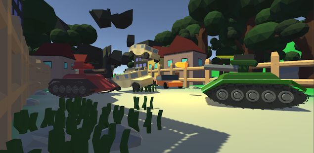

Meu nome é Herick, sou apaixonado por tecnologia, códigos, e muito mais por ROBÔS. Desde criança comecei a estudar desenvolvimento de games e não parei mais! Quando comecei, enfrentei grandes dificuldades mas com fé consegui vencer todas elas e estou a cada dia aprendendo mais e mais sobre tecnologia. Comecei com Python mas parei no começo por ser muito pequeno e não ter foco nem visão do que realmente essa linguagem poderia fazer, então algum tempo depois resolvi ter "FOCO" Força de vontade e resolvi aprender c#, fiz um curso, aprendi muita coisa, foi onde meu conhecimento deu um UP. Logo depois de aprender c# criei um jogo na unity, então decidi aprofundar meus conhecimentos e fiz um curso de c++ aplicado no arduino, liderei um grupo de robotica na minha escola onde dei diversas aulas para os meus amigos que queria desenvolver robos! No momento estou cursando ANALISE E DESENVOLVIMENTO DE SISTEMAS! E pretendo trabalhar em uma grande empresa do mercado como google, amazon, netflix ou criar a minha própia empresa.
Esse site tenta reunir os melhores memes em um único lugar, ele ainda está em desenvolvimento mas diariamente venho trabalhando nele para que se torne um dos melhores do mercado! Marramemes.xyz
Esse robo foi desenvolvido com arduino usando a base da linguamgem C++, ele foi o primeiro e o que deu o pontapé inicial para que eu estudasse mais e mais tecnologia! O video foi gravando de maneira amadora pelo meu cordenador da minha escola onde estudei no ensino médio, todos os meus amigos inclusive o cordenador ficaram impressionados... Não é todos os dias que você ver um robô "caseiro" andando na sua frente não é mesmo?
Projeto desenvolvido em novembro de 2019
Este foi o meu segundo projeto e meu primeiro jogo feito na Unity, lancei na PlayStore sem o intuito de lucrar apenas de obter mais conhecimento, não tive muito suscesso com ele na play store mas me deu um belo de um crescimento nos meus conhecimento.
Esses foi um dos robos que a galera mais gostou... Se bem que até ficou engraçado! nesse momento eu já tinha um conhecimento mais aprofundado em algoritimos mas nada muito surprendente, comprei a guarra na internet, montei e progamei, parece bem simples né? Mas deu um belo de um trabalho... Todos esses projetos postados aqui são maracados por grandes dificuldades, por isso tenho orgulho de mostrar cada robozinho, por mais que seja simples foi bem dificil de fazer, tem projetinhos que levaram 3 meses para serem feitos.
Projeto feito em julho de 2020
Esse é a versão mais recente do Charles, o robô em que venho me dedicando boa parte da minha carreira como progamador, em breve colocarei uma inteligencia artificial bem avançada nele. Busco diariamente evoluir ele para que tenha uma importancia para humanidade!
Um jogo baseado em tanques porem com uma jogabilidade Arcade e cartoon com um mapa 99% destrutivel para alimentar o desejo de pessoas novas até mesmo pessoas mais velhas que gostam de Tanques.
Projeto feito em outubro de 2020
Site desenvolvido em janeiro de 2021